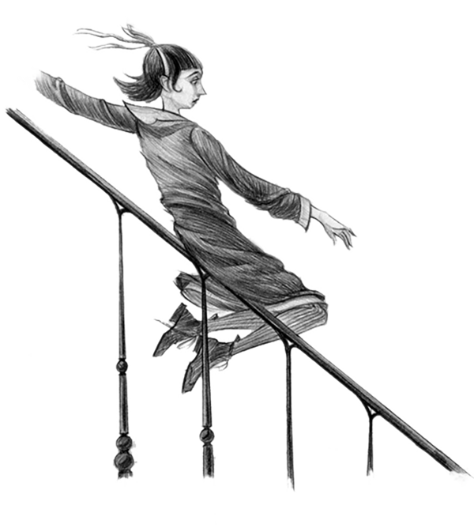
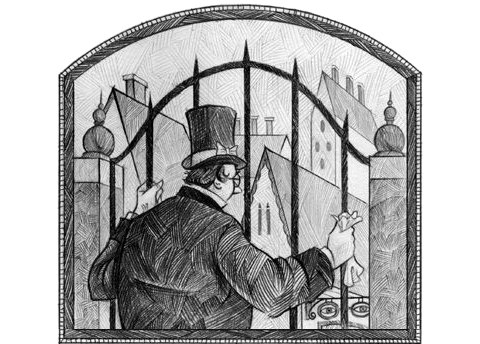
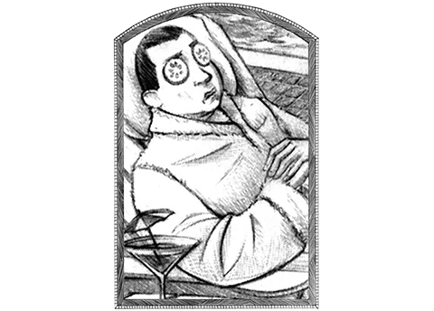

A Series of Unfortunate Events
About
A Series of Unfortunate Events is a series of thirteen novels written by American author Daniel Handler under the pen name Lemony Snicket. Although they are classified "children's novels", the books often have a dark and mysterious feeling to them. The books follow the turbulent lives of Violet, Klaus, and Sunny Baudelaire. After their parents' death in a fire, the children are placed in the custody of a murderous relative, Count Olaf, who attempts to steal their inheritance and, later, orchestrates numerous disasters with the help of his accomplices as the children attempt to flee. As the plot progresses, the Baudelaires gradually confront further mysteries surrounding their family and deep conspiracies involving a secret society known as V.F.D., with connections to Olaf, their parents, and many other relatives. The series is narrated by Lemony Snicket, who dedicates each of his works to his deceased love interest, Beatrice, and often attempts to dissuade the reader from reading the Baudelaires' story.
Characterized by Victorian Gothic tones and absurdist textuality, the books are noted for their dark humor, sarcastic storytelling, and anachronistic elements, as well as frequent cultural and literary allusions. They have been classified as postmodern and metafictional writing, with the plot evolution throughout the later novels being cited as an exploration of the psychological process of transition from the idyllic innocence of childhood to the moral complexity of maturity. Likewise, the final installments of the series are also acknowledged for their escalatingly intricate ethical ambiguity toward philosophical ambivalence, as the nature of some of the Baudelaires' actions becomes increasingly harder to discern from those of their antagonist counterparts and more characters are revealed to be responsible for permanent wrongdoing, despite their identification with the self-proclaimed good side of the tale.
Since the release of the first novel, The Bad Beginning, in September 1999, the books have gained significant popularity, critical acclaim, and commercial success worldwide, spawning a film, a video game, assorted merchandise and a television series on Netflix. The main thirteen books in the series have collectively sold more than 60 million copies and have been translated into 41 languages. Several companion books set in the same universe of the series have also been released, including Lemony Snicket: The Unauthorized Autobiography, The Beatrice Letters and the noir prequel tetralogy All the Wrong Questions, which chronicles Snicket's childhood.
Synopsis
Setting
The books seem to be set in an alternate, "timeless" world with stylistic similarities to both the 19th century and the 1930s, though with contemporary, and seemingly anachronistic scientific knowledge. For instance, in The Hostile Hospital, the Baudelaire children send a message via Morse code on a telegraph, yet the general store they are in has fiber-optic cable for sale. An "advanced computer" appears in The Austere Academy; this computer's exact functions are never stated, as its only use in the book is to show a picture of Count Olaf.
In a companion book to the series, The Unauthorized Autobiography, the computer is said to be capable of advanced forgery. The setting of the world has been compared to Edward Scissorhands in that it is "suburban gothic". Although the film version sets the Baudelaires' mansion in the city of Boston, Massachusetts, real places rarely appear in the books. Some are mentioned, however.
For example, in The Ersatz Elevator, a book in Jerome and Esmé Squalor's library was titled Trout, In France They're Out; there are also references to the fictional nobility of North American regions, specifically the Duchess of Winnipeg and the King of Arizona, perhaps allusions to the setting of Kurt Vonnegut's novel Slapstick, which features similar North American fictional nobility. Vonnegut's novel focuses on artificial family as the cure for loneliness and strife, which seems to also be the aim of the "artificial family" of V.F.D.
Plot
The series follows the adventures of three siblings called the Baudelaire orphans. Snicket explains that very few positive things happen to the children. Violet Baudelaire, the eldest, is fourteen when the series begins and is an inventor. Klaus Baudelaire, the middle child, is twelve when the series begins; he loves books and is an extraordinary speed reader with a first-class photographic memory. Sunny Baudelaire is a baby in the beginning of the series, and enjoys biting things with her abnormally large teeth; she develops a love for cooking later in the series. All of the orphans have an allergy for peppermints stated in The Wide Window, where Violet gets red and itchy skin, Klaus's tongue swells up, and both happen to Sunny.
The children are orphaned after their parents are killed in a fire at the family mansion. In The Bad Beginning, they are sent to live with a distant relative named Count Olaf after briefly living with Mr. Poe, a banker in charge of the orphans' affairs. The siblings discover that Count Olaf intends to get his hands on the enormous Baudelaire fortune, which Violet is to inherit when she reaches 18 years of age. In the first book, he attempts to marry Violet, pretending it is the story line for his latest play, but the plan falls through when Violet uses her non-dominant hand to sign the marriage document, thus causing the marriage to not be successful. After the crowd realizes, Count Olaf manages to escape with his henchmen.

In the following six books, Olaf disguises himself, finds the children and, with help from his many accomplices, tries to steal their fortune, committing arson, murder and other crimes. In the eighth through twelfth books, the orphans adopt disguises while on the run from the police after Count Olaf frames them for one of his murders. The Baudelaires routinely try to get help from Mr. Poe, but he, like many of the adults in the series, is oblivious to the dangerous reality of the children's situation.
As the books continue, another running plot is revealed concerning a mysterious secret organization known as the Volunteer Fire Department, or V.F.D. From book 5 on, the relationship between the Baudelaires, V.F.D., and their parent's deaths are slowly revealed, leading the siblings to question their previous lives and the history of their family. The siblings continue to get more involved with the organization until they are forced to flee with Count Olaf to an island where Olaf accidentally causes the deaths of himself and possibly the idyllic colonists of the island, whose fates are left unknown.
Having finally found a safe place to live, the children spend the next year raising the baby of one of their parent's friends from V.F.D. who died giving birth to the child. After a year, the siblings decide to try to return to the mainland to continue their lives. It is hinted that the Baudelaires might have died on their voyage home, although supplementary novels reveal that they did make it back to the mainland in some capacity. Handler retooled a manuscript he had for a mock-Gothic book for adults, which became "the story of children growing through all these terrible things", a concept which the publishers liked, to Handler's surprise.
The first book in the series was The Bad Beginning, released September 30, 1999. When asked in a Moment Magazine interview about the Baudelaire children and Snicket's own Jewish heritage he replied, "Oh yeah! Yes. The Baudelaires are Jewish! I guess we would not know for sure but we would strongly suspect it, not only from their manner but from the occasional mention of a rabbi or bar mitzvah or synagogue. The careful reader will find quite a few rabbis."
Main Characters
Count Olaf
Count Olaf is the series' main villain and one of the primary characters. A failing actor (though he claimed to have been considered for major acting awards) who is after the Baudelaire fortune, Count Olaf follows the children with dogged determination to obtain their inheritance and kill them. He was once part of the secret organization of V.F.D. (Volunteer Fire Department) before helping to instigate a schism that split its members. He joined the fire-starting side of the organization and was known to have committed a wide assortment of arsons, among numerous other crimes, in his thirst to destroy the organization and gain revenge over his former comrades. He is known for his one eyebrow, gleaming eyes, and V.F.D. insignia tattoo, shaped like an eye, on his left ankle.
Violet Baudelaire
Violet Baudelaire is the eldest Baudelaire. She helps her twelve-year-old younger brother Klaus and her baby sister Sunny solve problems with her inventing skills. Violet is fourteen at the beginning of the series and turns fifteen in The Grim Grotto. Brett Helquist's drawings indicate she has long, dark brown hair, and though her eye color is never specified, it is implied that her eyes are a different color than Klaus's. When thinking and concentrating on new inventions, Violet ties her hair in a purple ribbon to keep it out of her face.
Klaus Baudelaire
Klaus Baudelaire is the middle child of the Baudelaire orphans; he has an older sister named Violet and a younger sister named Sunny. His sister, Violet, is the family inventor, Sunny is the family biter, and he is the researcher. He is twelve years old at the beginning of the series and is fourteen by the end of the series. Klaus is the "bookworm" of the family, and his love of books has often helped him save himself and his sisters from Count Olaf, the sinister villain of the series.
Sunny Baudelaire
Sunny Baudelaire is the youngest of the three Baudelaire orphans and is described as an infant through much of the series. Although Sunny cannot walk until the end of the seventh book and speaks in idiosyncratic baby talk, she repeatedly demonstrates advanced problem solving skills, motor dexterity, comprehension, moral reasoning, and intelligence.
Arthur Poe
Arthur Poe is a banker at Mulctuary Money Management in charge of the Baudelaire and Quagmire fortunes and the Baudelaire orphans' guardianship. He is distinguished by a congenital cough, purblind demeanour, and general inefficacy in caring for the Baudelaire and Quagmire children.
Lemony Snicket
Lemony Snicket is the author of the book series who has chronicled the lives to the Baudelaire children. He dedicates his books to his long lost girlfriend, Beatrice Baudelaire.
Supporting Characters
Baudelaire family members
Beatrice Baudelaire
Beatrice Baudelaire was the mother of Violet, Klaus and Sunny Baudelaire. She is known to have been an actress, a lion-tamer and a "baticeer" (bat trainer). Lemony Snicket was in love with Beatrice and they almost got married, but Beatrice married Bertrand instead, supposedly because she believed that Lemony was dead after his obituary appeared in The Daily Punctilio newspaper. Besides this, various other hints are dispensed throughout the series as to why she called off the marriage. Since then, there have been many theories about it.
Bertrand Baudelaire
Bertrand Baudelaire is the father of Violet, Klaus, and Sunny Baudelaire, the husband of Beatrice, and a V.F.D. member. Throughout the series, the children remember anecdotes about their father, such as him cooking at a dinner party. He was a childhood friend of Beatrice and a good friend of Dewey Denouement.[1] As a member of the V.F.D., Bertrand helped train the V.F.D. lions to become the Volunteer Feline Detectives.[2] Count Olaf implies that Bertrand and Beatrice murdered Olaf's parents. At the beginning of the series, Bertrand died in the fire that destroyed the Baudelaire Mansion.
Narration Style
Lemony Snicket frequently explains words and phrases in incongruous detail. When describing a word the reader may not be aware of, he typically says "a word which here means ...," sometimes with a humorous definition, or one that is relevant only to the events at hand (for example, he describes "adversity" as meaning "Count Olaf").
Despite the general absurdity of the books' storyline, Lemony Snicket continuously maintains that the story is true and that it is his "solemn duty" to record it. Snicket often goes off into humorous or satirical asides, discussing his opinions or personal life. The details of his supposed personal life are largely absurd, incomplete, and not explained in detail. For example, Snicket claims to have been chased by an angry mob for 16 miles. Some details of his life are explained somewhat in a supplement to the series, Lemony Snicket: The Unauthorized Autobiography.
Lemony Snicket's narration and commentary is characteristically cynical and despondent. In the blurb for each book, Snicket warns of the misery the reader may experience in reading about the Baudelaire orphans and suggests abandoning the books altogether. However, he also provides ample comic relief with wry, dark humor. In the excerpt for The Grim Grotto, he writes: "... the horrors [the Baudelaire children] encounter are too numerous to list, and you wouldn't even want me to describe the worst of it, which includes mushrooms, a desperate search for something lost, a mechanical monster, a distressing message from a lost friend and tap-dancing." Snicket's narration has been described as "self-conscious" and "post-modern".
Snicket translates for the youngest Baudelaire orphan, Sunny, who in the early books almost solely uses words or phrases that make sense only to her siblings. As the series progresses, her speech often contains disguised meanings. Some words are spelled phonetically: 'surchmi' in The Slippery Slope and 'Kikbucit?' in The End; some are spelled backwards: 'edasurc' in The Carnivorous Carnival, and 'cigam' in The Miserable Mill. Some contain references to culture or people: for instance, when Sunny says "Busheney" (combining the last names of George W. Bush and Dick Cheney, presumably), it is followed by the definition of "you are a vile man who has no regard for anyone else". Some words Sunny uses are foreign, such as "Shalom", "Sayonara" or "Arrête". Some are more complex, such as when she says "Akrofil, meaning, 'they were not afraid of heights'", which phonetically translates to acrophile, meaning one who loves heights. She begins to use standard English words towards the end of the books, one of her longer sentences being "I'm not a baby" in The Slippery Slope.
When describing a character whom the Baudelaires have met before, Snicket often describes the character first and does not reveal the name of the character until they have been thoroughly described. Lemony Snicket starts each book with a "post-modern dissection of the reading experience"[10] before linking it back to how he presents the story of the Baudelaires and what their current situation is. Snicket often uses alliteration to name locations, as well as book titles, throughout the story. Many of the books start with a theme being introduced that is continually referenced throughout the book—such as the repeated comparisons of the words "nervous" and "anxious" in The Ersatz Elevator, the consistent use of the phrase "where there's smoke, there's fire" in The Slippery Slope and the descriptions of the water cycle in The Grim Grotto.